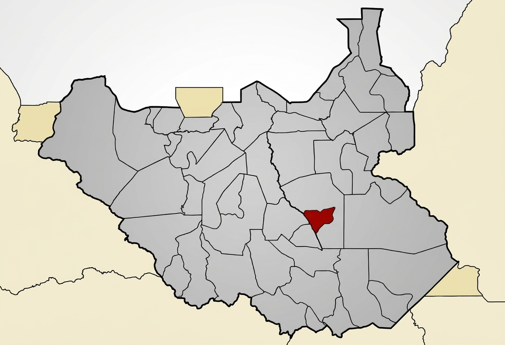

Aspirant for Member of Parliament, Twic East

Twic East is constituency number ten in Jonglei State and Pibor Administrative Area. Its capital is Panyagor. This is my home, and that of my ancestors. I want it to reach the glory I know it deserves. But before you can provide solutions, it is important to first know what the problem is. Below are some of the issues affecting Twic East.
Sustainable peace requires dialogue, cooperation, and accountability. I propose advocating for regular peace dialogues involving community elders, youth, women, traditional leaders, and neighboring communities.
Twic East needs a coordinated, long-term response to recurring floods. I propose advocating for sustainable flood mitigation, stronger infrastructure, and effective support for displaced households.
Access to essential healthcare must remain a priority, even during conflict and humanitarian emergencies. I propose working with relevant authorities and partners to strengthen health services across Twic East.
Every person deserves safety, dignity, and protection from violence and exploitation. I propose advocating for stronger protection systems for women, children, and other vulnerable members of the community.
Delivery steps and accountability measures are recorded in detail in my Manifesto